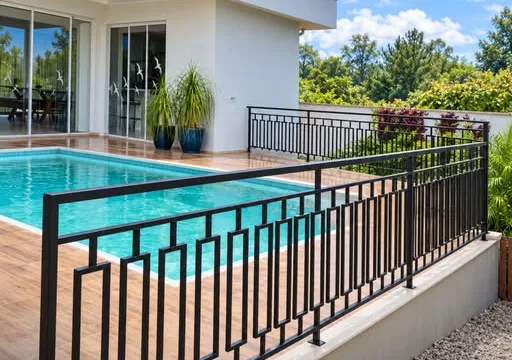
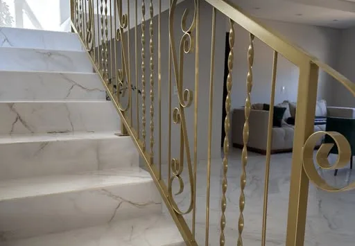
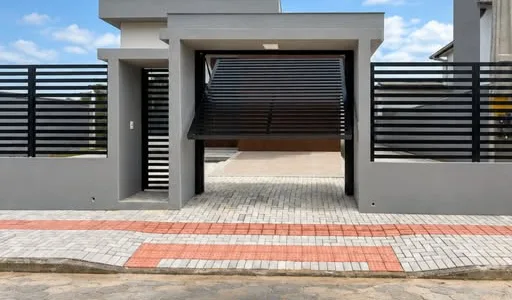
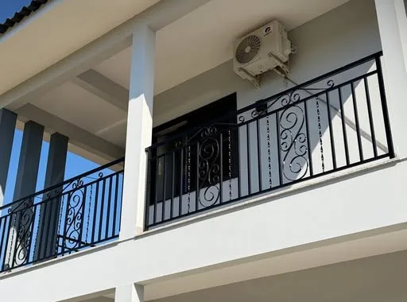
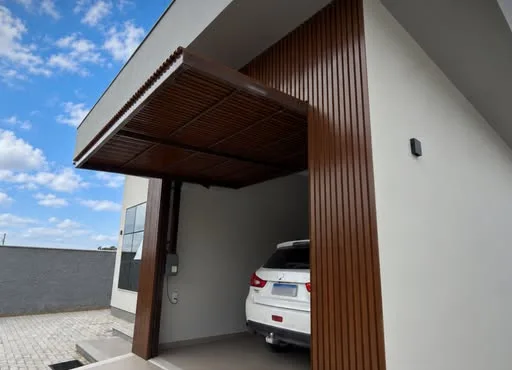
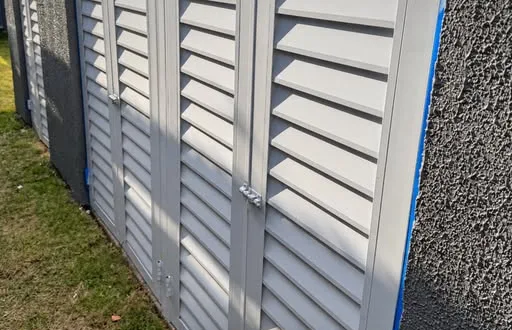
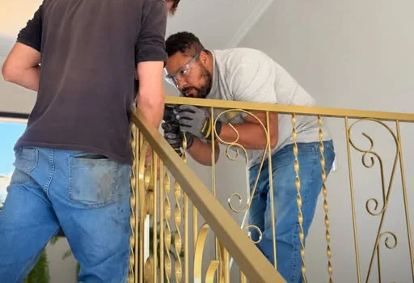
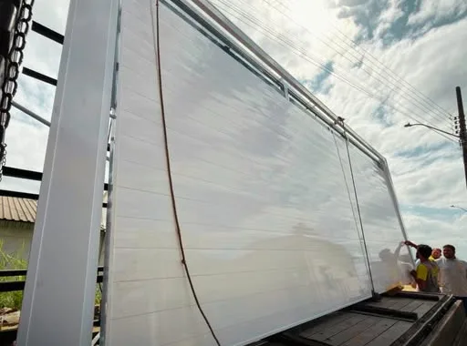

Portões
Portões de correr, basculantes e sociais, integrados ao fechamento da fachada.
Solicitar orçamentoDa referência que você nos manda até a instalação: projeto, fabricação e montagem com prazo combinado e acabamento que combina com o ambiente.



Cada peça é feita sob medida, no estilo e na cor que combinam com a sua casa ou empresa.
Portões de correr, basculantes e sociais, integrados ao fechamento da fachada.
Solicitar orçamento
Sacadas, janelas e muros, do modelo reto ao clássico com arabescos.
Solicitar orçamentoPara escadas internas e externas, com a segurança e o acabamento que o espaço pede.
Solicitar orçamento
Coberturas, pergolados e estruturas metálicas, inclusive com acabamento em madeira.
Solicitar orçamento
Soluções para áreas técnicas e espaços pequenos, com ventilação.
Solicitar orçamentoAlguns dos trabalhos recentes. Novas obras toda semana no nosso Instagram.
Guarda-corpo de piscinaFerro preto, linhas retas
Corrimão de escadaDourado, com arabescos
Guarda-corpo de sacadaPreto, modelo clássico
Portão e fechamentoRipado preto com portão basculante
Cobertura de garagemEstrutura com acabamento em madeira
Portas venezianasÁrea técnica com ventilação

Instalação de corrimãoMontagem no local

Estrutura metálicaTransporte e montagem planejados
Preencha os dados e a mensagem abre pronta no WhatsApp da Agnes. Na conversa, você pode enviar fotos do local e de referências.
220 avaliações de clientes no Google.
R. João Bosa, 109 · Nossa Sra. de Fátima · Içara/SC